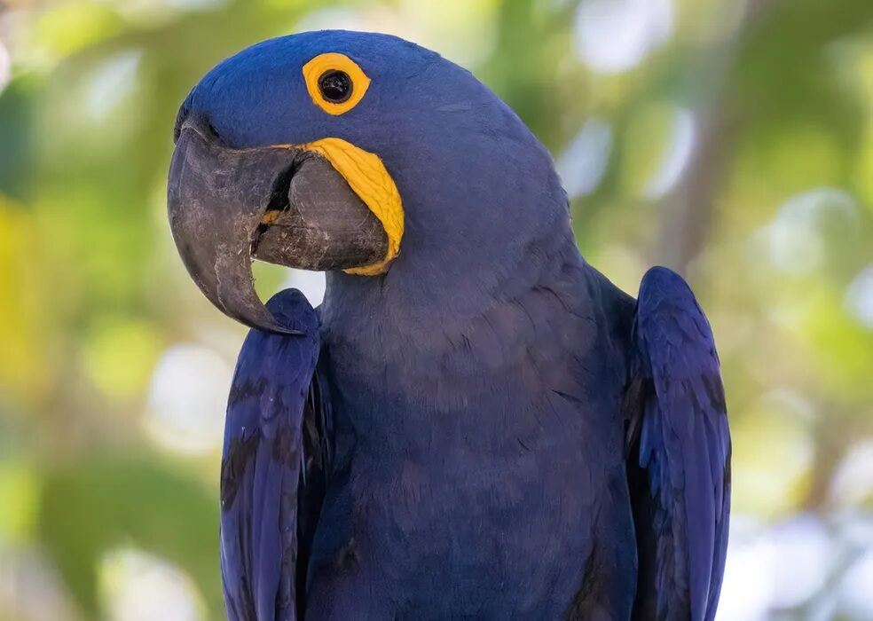

Sobre a Arara Azul
A arara azul, também conhecida como a arara-azul-grande (Anodorhynchus hyacinthinus), é uma das aves mais impressionantes e majestosas do Brasil. Com suas penas de um azul vibrante, é facilmente reconhecível e se tornou símbolo da biodiversidade brasileira.

Habitat
A arara azul habita principalmente as florestas tropicais do Brasil, especialmente no estado do Mato Grosso do Sul e em algumas regiões de Goiás. Ela prefere áreas com grandes árvores e rios, que fornecem os recursos essenciais para sua alimentação e reprodução.
Conservação
Infelizmente, a arara azul está classificada como uma espécie em perigo de extinção devido à perda de habitat e caça ilegal. Diversas organizações, juntamente com o governo brasileiro, estão trabalhando para proteger e preservar essa espécie única.